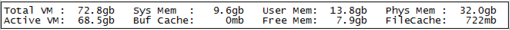
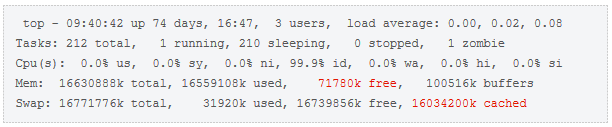
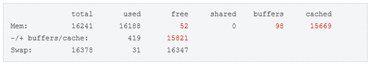

Memory 사용량 일상적 점검
서비스 운영 중에 갑작스런 메모리부족에 의한 서비스 지연이 발생할 수 있는데 이 과정에서 지속적으로 메모리부족 현상이 발생할 때 사용자가 확인할 부분과 해결방안에 대해 설명한다.
OS별 시스템 메모리/Swap 확인 방법
장비의 여유메모리가 부족한지 여부는 OS명령어를 이용하여 가용메모리를 확인 할수 있다.
아래의 OS 명령어를 통해 메모리 사용부분을 확인해 볼수 있다.
AIX

항목 (붉은 박스)
설명
size
전체 물리적 메모리의 페이지 개수를 의미한다. 실제 1page는 4,096byte임으로 7936M의 메모리를 갖는 시스템임.
inuse
(Computational + Persistent)의 실제 사용 중인 물리적인 메모리의 페이지 개수
free
물리적 메모리에서 사용 중이지 않은 페이지 개수
pin
Swap out할 수 없는 물리적 메모리의 페이지 개수
virtual
VMM (Virtual Memory Manager)에 의해 생성된 페이지 개수
pg space
Paging space 공간의 사용량
HPUX
# glance -> m 메모리 확인

현재 물리적인 메모리 32.0GB - 시스템 9.6GB + 유저 13.8GB + 파일캐쉬 722MB - 버퍼캐쉬 0GB + 프리 7.9GB (사용가능한 메모리량)
LINUX : linux에서는 메모리 사용 현황을 top 명령으로 조회할수 있으며, 아래는 top 결과 샘플이고 샘플내의 여러 항목들 중에서 free 와 cached의 값이 주요 항목이다.

linux에서 가용메모리 계산은 free + buffers + cached로 할수 있다.
위의 top 명령 결과로 메모리 용량을 분석해 본다면,
- 전제 물리 메모리 : 16630888k - 실제 사용중인 메모리(used - cached - buffers) : 16559108k - 16034200k - 100516k = 424392k - 실제 가용한 메모리 (free + buffers + cached) : 71780k + 100516k + 16034200k = 16206496k - 전체 메모리(실제 사용중인메모리 + 실제 가용한메모리) : 424392k + 16206496k = 16630888k
아래는 free명령을 통해 조회한 결과이다.(-m 옵션은 MB단위 출력지정) 
일상적 점검사항
사용자는 현재의 메모리사용량에 대한 정상유무를 판단하기 위해 다음의 이력관리가 필요하다. 이것은 문제상황이 발생할 때 정상 대비 증가된 부분을 분석하여 원인을 추적하는데 중요한 정보로 활용이 가능하다.
| 항목 | 수집방안 |
|---|---|
| 시간대별/일별 메모리사용률 | OS가 제공하는 Altibase 프로세스의 메모리사용률 획득방법을 통해 주기적으로 기록/관리한다. |
| 시간대별/일별 트랜잭션 처리량 | 응용프로그램의 트랜잭션 처리량을 기록/관리한다. 이것이 어려울 경우 ALTIBASE에서 제공하는 V$SYSSTAT 을 통해 다음과 같은 정보를 주기적으로 획득하여 기록/관리한다. select * from v$memstat order by alloc_size desc; |
| 서비스쓰레드의 증감여부 | 평소보다 세션의 증가 혹은, 업무량의 증가로 인해 서비스쓰레드가 증가하는 경우가 있는데 이런 패턴이 발생하는지를 체크한다. SELECT COUNT(*) AS THREAD FROM V$SERVICE_THREAD; SELECT COUNT(*) AS SESSION FROM V$SESSION; |
아래와 같은 shell script를 이용하여 일정 간격으로 수집된 정보를 파일로 기록하는 방식이 좀 더 간편할 수 있다.
V$sysstat로 구해지는 EXECUTE COUNT는 누적값이므로 단위 시간당 증가량을 구하기 위해서는 단위시간 증가값 = ( 최근값 - 이전값 ) 과 같은 방식으로 계산해야 한다.
# gettps.sh
ALTIPID=`ps -ef | grep $USER | grep "bin/altibase -p boot" | grep -v grep | awk '{print $2}'`
MAXCOUNT=3
COUNT=0
INTERVAL=30
do_getExecuteCount()
{
is -silent <<EOF
set linesize 1024;
set colsize 50;
set feedback off;
set heading off;
select 'RESULT='||( select count(*) from v\$session )
||'=' || ( select count(*) from v\$service_thread )
||'=' || ( select sum(value) from v\$sysstat where name in ( 'execute success count','prepare success count','prepare failure count') )
from dual;
EOF
}
while [ $COUNT -lt $MAXCOUNT ]
do
ALTICPU=`ps -o pcpu -p $ALTIPID | grep -v CPU`
ALTIMEM=`ps -o pmem -p $ALTIPID | grep -v MEM`
EXECRESULT=`do_getExecuteCount`
SESSIONCNT=`echo $EXECRESULT | grep "RESULT=" | cut -d'=' -f 2| tr -d ' '`
THREADCNT=`echo $EXECRESULT | grep "RESULT=" | cut -d'=' -f 3 | tr -d ' '`
EXECCNT=`echo $EXECRESULT | grep "RESULT=" | cut -d'=' -f 4 | tr -d ' '`
echo `date "+%Y%m%d %H%M%S: CPU USAGE="`$ALTICPU" " MEM USAGE=$ALTIMEM" SESSIONCNT=$SESSIONCNT THREADCNT=$THREADCNT EXECCNT=$EXECCNT"
sleep $INTERVAL
COUNT=`expr $COUNT + 1`
done
위의 shell script를 실행하였을 때는 아래와 같이 출력될 수 있다.
$ sh get.sh
20170213 110718: CPU USAGE= 7.1 MEM USAGE= 0.6 SESSIONCNT=1 THREADCNT=25 EXECCNT=1201
20170213 110748: CPU USAGE= 7.1 MEM USAGE= 0.6 SESSIONCNT=1 THREADCNT=25 EXECCNT=1202
20170213 110818: CPU USAGE= 7.1 MEM USAGE= 0.6 SESSIONCNT=1 THREADCNT=25 EXECCNT=1203
......
V$MEMSTAT
V$MEMSTAT는 Altibase가 제공하는 내부 모듈 별 메모리 사용량에 대한 Performance View이다.
Altibase 프로세스가 점유하고있는 메모리가 클경우 V$MEMSTAT 를 통해 Altibase의 메모리 사용부분을 세부적으로 확인할수 있다.
대표적인 메모리 증가 유형
앞서 설명한 '일상적 점검' 항목을 기준으로 Altibase의 메모리 증가 부분은 다음과 같이 정리할 수 있다.
- 메모리 테이블의 데이터가 증가에 의한 경우
- 실행되는 SQL 문장의 수가 증가하는 경우
- MVCC(Multi Version Concurrency Control)기법에 의해 증가되는 경우
- Aging 대상정보의 삭제가 지연 처리되는 경우
위와 같은 대표적인 경우들에 대해 원인과 조치방법에 대해 자세히 살펴보도록 한다.
{kind=link}
{kind=link}
{kind=link}
{kind=link}
{kind=link}
{kind=link}